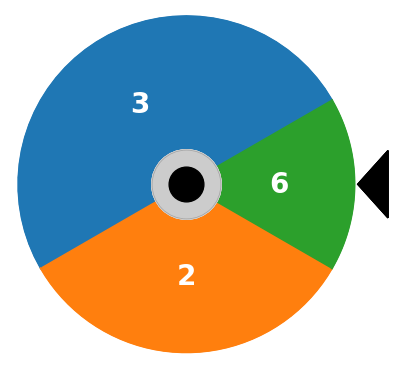

Extra material: Luenberger’s Investment Wheel#
Preamble: Install Pyomo and a solver#
This cell selects and verifies a global SOLVER for the notebook.
If run on Google Colab, the cell installs Pyomo and ipopt, then sets SOLVER to use the ipopt solver. If run elsewhere, it assumes Pyomo and the Mosek solver have been previously installed and sets SOLVER to use the Mosek solver via the Pyomo SolverFactory. It then verifies that SOLVER is available.
import sys, os
if 'google.colab' in sys.modules:
%pip install idaes-pse --pre >/dev/null 2>/dev/null
!idaes get-extensions --to ./bin
os.environ['PATH'] += ':bin'
solver = "ipopt"
else:
solver = "mosek_direct"
import pyomo.kernel as pmo
import pyomo.environ as pyo
SOLVER = pmo.SolverFactory(solver)
assert SOLVER.available(), f"Solver {solver} is not available."
Problem statement#
David Luenberger presents an “investment wheel” in Chapter 18 of his book Investment Science. The wheel is divided into sectors, each marked with a number. An investor places wagers on one or more sectors before spinning the wheel. When the wheel stops, the investor receives a payout equal to the wager times the number appearing next to the marker. The wagers on all other sectors are lost. The game is repeated indefinitely.

Given an initial wealth \(W_0\), what is your investing strategy for repeated plays of the game?
Is there an investing strategy that almost surely grows?
What is the mean return for each spin of the wheel?
# specify the investment wheel
wheel = {
"A": {"p": 1 / 2, "b": 3},
"B": {"p": 1 / 3, "b": 2},
"C": {"p": 1 / 6, "b": 6},
}
Simulation#
The following cell provides an interactive simulation of the investment wheel. The weighting parameters \(w_A\), \(w_B\), and \(w_C\) represent the fraction of the investor’s current stake that is wagered on sectors \(A\), \(B\), and \(C\), respectively. Experiment with the simulation to find weights that produce an acceptable compromise between long term return and risk.
import numpy as np
import matplotlib.pyplot as plt
import bisect
import ipywidgets as widgets
def wheel_sim(w, T, N):
# set of wheel sectors
S = list(wheel.keys())
# odds, probability, and quantiles
b = {s: wheel[s]["b"] for s in S}
p = {s: wheel[s]["p"] for s in S}
q = np.cumsum(list(p.values()))
# gross return for each sector
R = {s: 1 + w[s] * b[s] - sum(w.values()) for s in S}
# set up plot and colors
_, ax = plt.subplots(1, 1, figsize=(8, 3))
colors = {s: ax.semilogy(0, 1, ".", ms=10)[0].get_color() for s in S}
# repeat the simulation N times
for _ in range(N):
wealth = 1.0
for k in range(T):
# spin the wheel
spin = np.random.uniform()
s = S[bisect.bisect_left(q, spin)]
wealth_next = wealth * R[s]
# add to plot
ax.semilogy([k, k + 1], [wealth, wealth_next], c=colors[s], alpha=0.4)
ax.semilogy(k + 1, wealth_next, ".", ms=4, c=colors[s], alpha=0.4)
wealth = wealth_next
# compute expected log return
ElogR = sum(p[s] * np.log(R[s]) for s in S)
ax.plot(np.exp(ElogR * np.linspace(0, T, T + 1)), lw=5, alpha=0.5)
ax.set_title(f"E[log(R)] = {ElogR:0.5f}")
ax.legend([f"$w_{s}$ = {w[s]:0.3f}" for s in S])
ax.set_xlim(0, T)
ax.set_ylim(0.01, 1000.0)
ax.set_ylabel("Wealth")
ax.set_xlabel("Stages")
ax.grid(True)
plt.tight_layout()
plt.show()
return ax
wheel_sim({"A": 0.33, "B": 0.33, "C": 0.33}, 40, 20)
@widgets.interact_manual(
wA=widgets.FloatSlider(min=0.0, max=1.0, step=0.01, value=0.333),
wB=widgets.FloatSlider(min=0.0, max=1.0, step=0.01, value=0.333),
wC=widgets.FloatSlider(min=0.0, max=1.0, step=0.01, value=0.333),
)
def wheel_interact1(wA, wB, wC):
w = {"A": wA, "B": wB, "C": wC}
wheel_sim(w, 40, 20)
Modeling#
The investment wheel is an example of a game with \(n=3\) outcomes. Each outcome \(n\) offers payout \(b_n\) that occurs with probability \(p_n\) as given in the following table.
Outcome |
Probability \(p_n\) |
Odds \(b_n\) |
|---|---|---|
A |
1/2 |
3 |
B |
1/3 |
2 |
C |
1/6 |
6 |
If a \(w_n\) of current wealth is wagered on each outcome \(n\), then the gross returns \(R_n\) are given in the following table.
Outcome |
Probability \(p_n\) |
Gross Returns \(R_n\) |
|---|---|---|
A |
1/2 |
1 + 2\(w_A\) - \(w_B\) - \(w_C\) |
B |
1/3 |
1 - \(w_A\) + \(w_B\) - \(w_C\) |
C |
1/6 |
1 - \(w_A\) - \(w_B\) + 5\(w_C\) |
Following the same analysis used for the Kelly criterion, the optimization problem is to maximize expected log return
The objective function can be reformulated exponential cones to a conic optimization problem.
The solution of this optimization problem is shown below.
def wheel_model(wheel):
m = pmo.block()
m.S = wheel.keys()
# decision variables
m.w = pmo.variable_dict({s: pmo.variable(lb=0) for s in m.S})
m.q = pmo.variable_dict({s: pmo.variable() for s in m.S})
# objective
m.ElogR = pmo.objective(
sum(wheel[s]["p"] * m.q[s] for s in m.S), sense=pmo.maximize
)
# expression for returns
m.R = pmo.expression_dict(
{
s: pmo.expression(1 + wheel[s]["b"] * m.w[s] - sum(m.w[s] for s in m.S))
for s in m.S
}
)
# constraints
m.sum_w = pmo.constraint(sum(m.w[s] for s in m.S) <= 1)
m.conic = pmo.block_dict(
{s: pmo.conic.primal_exponential.as_domain(m.R[s], 1, m.q[s]) for s in m.S}
)
SOLVER.solve(m)
return m
m = wheel_model(wheel)
print(f"Expected Log Return = {m.ElogR(): 0.5f}\n")
for s in m.S:
print(
f"Sector {s}: p = {wheel[s]['p']:0.3f} b = {wheel[s]['b']:0.2f} w = {m.w[s]():0.3f}"
)
w = {s: m.w[s]() for s in m.S}
_ = wheel_sim(w, 40, 20)
Expected Log Return = 0.06758
Sector A: p = 0.500 b = 3.00 w = 0.406
Sector B: p = 0.333 b = 2.00 w = 0.193
Sector C: p = 0.167 b = 6.00 w = 0.120
Adding risk aversion#
The Kelly criterion has favorable properties for the long term investor, but suffers from a significant chance of “drawdown” where the investor’s wealth drops below the initial value, sometimes without recovering for a long period of time. For this reason, investors normally augment the Kelly criterion with some sort of strategy for risk aversion.
He we follow the analysis of Busseti, Ryu, and Boyd (2016) for risk-constrained Kelly gambling. Consider a constraint
where \(\lambda\) is a risk aversion parameter. For the case of \(N\) discrete outcomes
The case \(\lambda=0\) is always satisfied and imposes no further restrictions on an optimization problem. This is this case of no risk-aversion. If \(\lambda > 0\) then outcomes with gross returns less than one are penalized. As \(\lambda \rightarrow \infty\) no solutions are admissible with a gross return less than one. In that case a feasible solution \(w_n = 0\) for all \(n\in N\) always exists, and there may other non-trivial solutions as well.
Replacing each term with an exponential
Introducing \(u_n \geq e^{\log(p_n) - \lambda q_n}\) using the \(q_n\) defined above, we get
The risk-constrained investment wheel is now
The following cell creates a risk-constrained model of the investment wheel.
def wheel_rc_model(wheel, lambd=0):
m = pmo.block()
m.S = wheel.keys()
# decision variables
m.w = pmo.variable_dict({s: pmo.variable(lb=0) for s in m.S})
m.q = pmo.variable_dict({s: pmo.variable() for s in m.S})
# objective
m.ElogR = pmo.objective(
sum(wheel[s]["p"] * m.q[s] for s in m.S), sense=pmo.maximize
)
# expression for returns
m.R = pmo.expression_dict(
{
s: pmo.expression(1 + wheel[s]["b"] * m.w[s] - sum(m.w[s] for s in m.S))
for s in m.S
}
)
# constraints
m.sum_w = pmo.constraint(sum(m.w[s] for s in m.S) <= 1)
m.conic = pmo.block_dict(
{s: pmo.conic.primal_exponential.as_domain(m.R[s], 1, m.q[s]) for s in m.S}
)
# risk constraints
m.u = pmo.variable_dict({s: pmo.variable() for s in m.S})
m.sum_u = pmo.constraint(sum(m.u[s] for s in m.S) <= 1)
m.risk = pmo.block_dict(
{
s: pmo.conic.primal_exponential.as_domain(
m.u[s], 1, np.log(wheel[s]["p"]) - lambd * m.q[s]
)
for s in m.S
}
)
SOLVER.solve(m)
return m
lambd = 2
m = wheel_rc_model(wheel, lambd)
print(f"Risk-aversion lambda = {lambd:0.3f}")
print(f"Expected Log Gross Return = {m.ElogR(): 0.5f}\n")
for s in m.S:
print(
f"Sector {s}: p = {wheel[s]['p']:0.4f} b = {wheel[s]['b']:0.2f} w = {m.w[s]():0.5f}"
)
w = {s: m.w[s]() for s in m.S}
wheel_sim(w, 40, 20)
Risk-aversion lambda = 2.000
Expected Log Gross Return = 0.06025
Sector A: p = 0.5000 b = 3.00 w = 0.36406
Sector B: p = 0.3333 b = 2.00 w = 0.26663
Sector C: p = 0.1667 b = 6.00 w = 0.12614
<Axes: title={'center': 'E[log(R)] = 0.06025'}, xlabel='Stages', ylabel='Wealth'>
@widgets.interact_manual(
lambd=widgets.FloatSlider(min=0.0, max=20.0, step=0.1, value=2),
)
def wheel_interact2(lambd):
m = wheel_rc_model(wheel, lambd)
w = {s: m.w[s]() for s in m.S}
wheel_sim(w, 40, 20)
How does risk aversion change the solution?#
The following cell demonstrates the effect of increasing the risk aversion parameter \(\lambda\).
fig, ax = plt.subplots(2, 1, figsize=(10, 4))
v = np.linspace(-1, 5)
lambd = np.exp(v)
results = [wheel_rc_model(wheel, _) for _ in lambd]
ax[0].semilogx(lambd, [np.exp(m.ElogR()) for m in results])
ax[0].set_title("investment wheel return / spin")
ax[0].grid(True)
ax[1].semilogx(lambd, [[m.w[s]() for s in wheel.keys()] for m in results])
ax[1].set_title("investment weights")
ax[1].set_xlabel("risk aversion $\lambda$")
ax[1].legend(
[f"(p, b) = ({wheel[s]['p']:0.3f}, {wheel[s]['b']:0.1f})" for s in m.S],
bbox_to_anchor=(1.05, 1.05),
)
ax[1].grid(True)
ax[1].set_ylim(0, 0.6)
fig.tight_layout()
Exercises#
Is there a deterministic investment strategy for the investment wheel?. That is, is there investment strategy that provides a fixed return regardless of the outcome of the spin? Set up and solve a model to find that strategy.
Find the variance in the outcome of the wheel, and plot the variance as a function of the risk aversion parameter \(\lambda\). What is the relationship of variance and \(\lambda\) in the limit as \(\lambda \rightarrow 0\)? See the paper by Busseti, E., Ryu, E. K., & Boyd, S. (2016) for ideas on how to perform this analysis.
Bibliographic Notes#
The Kelly Criterion has been included in many tutorial introductions to finance and probability, and the subject of popular accounts.
Poundstone, W. (2010). Fortune’s formula: The untold story of the scientific betting system that beat the casinos and Wall Street. Hill and Wang. https://www.onlinecasinoground.nl/wp-content/uploads/2020/10/Fortunes-Formula-boek-van-William-Poundstone-oa-Kelly-Criterion.pdf
Thorp, E. O. (2017). A man for all markets: From Las Vegas to wall street, how i beat the dealer and the market. Random House.
Thorp, E. O. (2008). The Kelly criterion in blackjack sports betting, and the stock market. In Handbook of asset and liability management (pp. 385-428). North-Holland. https://www.palmislandtraders.com/econ136/thorpe_kelly_crit.pdf
MacLean, L. C., Thorp, E. O., & Ziemba, W. T. (2010). Good and bad properties of the Kelly criterion. Risk, 20(2), 1. https://www.stat.berkeley.edu/~aldous/157/Papers/Good_Bad_Kelly.pdf
MacLean, L. C., Thorp, E. O., & Ziemba, W. T. (2011). The Kelly capital growth investment criterion: Theory and practice (Vol. 3). world scientific. https://www.worldscientific.com/worldscibooks/10.1142/7598#t=aboutBook
Luenberger’s investment wheel is
Luenberger, D. (2009). Investment science: International edition. OUP Catalogue. https://global.oup.com/ushe/product/investment-science-9780199740086
The utility of conic optimization to solve problems involving log growth is more recent. Here are some representative papers.
Cajas, D. (2021). Kelly Portfolio Optimization: A Disciplined Convex Programming Framework. Available at SSRN 3833617. https://papers.ssrn.com/sol3/papers.cfm?abstract_id=3833617
Busseti, E., Ryu, E. K., & Boyd, S. (2016). Risk-constrained Kelly gambling. The Journal of Investing, 25(3), 118-134. https://arxiv.org/pdf/1603.06183.pdf
Fu, A., Narasimhan, B., & Boyd, S. (2017). CVXR: An R package for disciplined convex optimization. arXiv preprint arXiv:1711.07582. https://arxiv.org/abs/1711.07582
Sun, Q., & Boyd, S. (2018). Distributional robust Kelly gambling. arXiv preprint arXiv: 1812.10371. https://web.stanford.edu/~boyd/papers/pdf/robust_kelly.pdf
The recent work by CH Hsieh extends these concepts in important ways for real-world implementation.
Hsieh, C. H. (2022). On Solving Robust Log-Optimal Portfolio: A Supporting Hyperplane Approximation Approach. arXiv preprint arXiv:2202.03858. https://arxiv.org/pdf/2202.03858